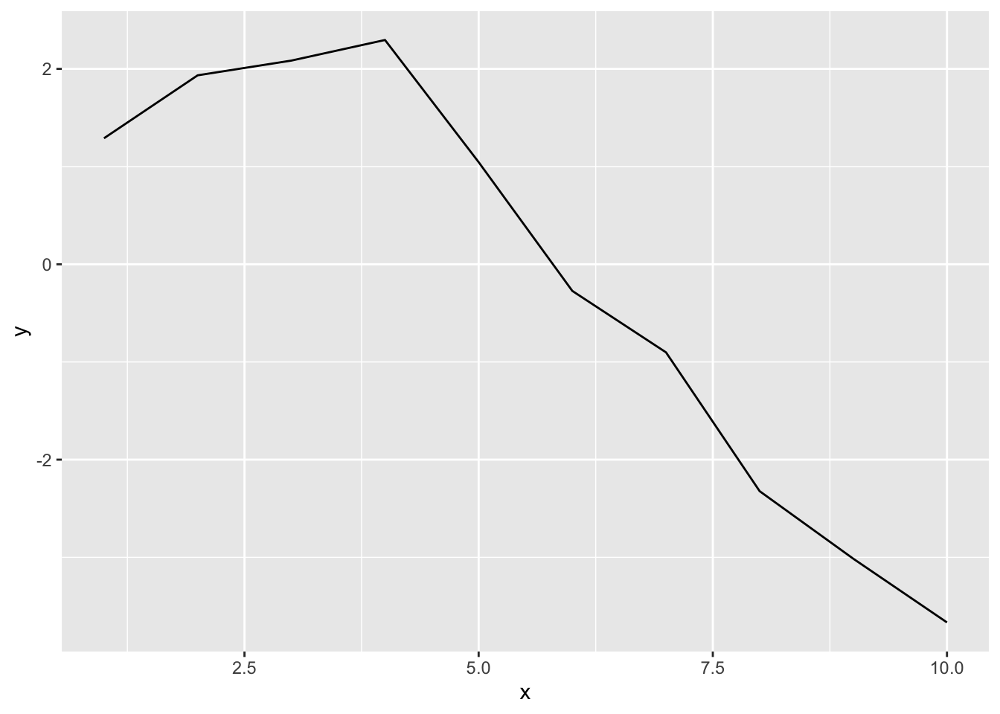

Exploring why R’s visualization ecosystem, particularly ggplot2, provides superior capabilities for statistical graphics
Published
June 23, 2025
1 Introduction
Data visualization is one of R’s strongest areas, with ggplot2 being the gold standard for statistical graphics. While Python has made progress with libraries like matplotlib, seaborn, and plotly, R’s visualization ecosystem remains unmatched in elegance, consistency, and statistical focus.
2 The Grammar of Graphics: ggplot2
2.1 R’s Elegant Approach
Code
library(ggplot2)library(dplyr)# Create a publication-ready scatter plot with regression lineggplot(mtcars, aes(x = wt, y = mpg, color =factor(cyl))) +geom_point(size =3, alpha =0.7) +geom_smooth(method ="lm", se =TRUE, color ="black") +labs(title ="Fuel Efficiency vs Weight by Cylinder Count",x ="Weight (1000 lbs)",y ="Miles per Gallon",color ="Cylinders" ) +theme_minimal() +theme(plot.title =element_text(size =14, face ="bold"),axis.title =element_text(size =12),legend.title =element_text(size =11) )
2.2 Python’s More Complex Approach
import matplotlib.pyplot as pltimport seaborn as snsimport pandas as pdimport numpy as npfrom scipy import stats# Create similar plot in Pythonfig, ax = plt.subplots(figsize=(10, 6))# Scatter plotscatter = ax.scatter(mtcars['wt'], mtcars['mpg'], c=mtcars['cyl'], cmap='viridis', s=50, alpha=0.7)# Regression lineslope, intercept, r_value, p_value, std_err = stats.linregress(mtcars['wt'], mtcars['mpg'])x_line = np.array([mtcars['wt'].min(), mtcars['wt'].max()])y_line = slope * x_line + interceptax.plot(x_line, y_line, 'k-', linewidth=2)# Customizationax.set_xlabel('Weight (1000 lbs)')ax.set_ylabel('Miles per Gallon')ax.set_title('Fuel Efficiency vs Weight by Cylinder Count')plt.colorbar(scatter, label='Cylinders')# Much more code required for similar output
3 Statistical Plots
3.1 R’s Built-in Statistical Graphics
Code
# Diagnostic plots for linear regressionlm_model <-lm(mpg ~ wt + cyl, data = mtcars)# Create diagnostic plots with ggplot2library(gridExtra)# Residuals vs Fittedp1 <-ggplot(lm_model, aes(.fitted, .resid)) +geom_point() +geom_hline(yintercept =0, linetype ="dashed") +geom_smooth(se =FALSE) +labs(title ="Residuals vs Fitted", x ="Fitted values", y ="Residuals") +theme_minimal()# Q-Q plotp2 <-ggplot(lm_model, aes(sample = .stdresid)) +stat_qq() +stat_qq_line() +labs(title ="Normal Q-Q", x ="Theoretical Quantiles", y ="Sample Quantiles") +theme_minimal()# Combine plotsgrid.arrange(p1, p2, ncol =2)
3.2 Python’s Fragmented Statistical Plots
# Python requires multiple libraries and more complex codeimport statsmodels.api as smimport scipy.stats as stats# Residuals vs Fittedfig, (ax1, ax2) = plt.subplots(1, 2, figsize=(12, 5))# Residuals plotfitted_values = model.fittedvaluesresiduals = model.residax1.scatter(fitted_values, residuals)ax1.axhline(y=0, color='r', linestyle='--')ax1.set_xlabel('Fitted values')ax1.set_ylabel('Residuals')ax1.set_title('Residuals vs Fitted')# Q-Q plotstats.probplot(residuals, dist="norm", plot=ax2)ax2.set_title('Normal Q-Q Plot')plt.tight_layout()
4 Complex Visualizations
4.1 R’s Faceted Plots
Code
# Create faceted plot with multiple variablesggplot(mtcars, aes(x = wt, y = mpg)) +geom_point(aes(color =factor(cyl))) +geom_smooth(method ="lm", se =TRUE) +facet_wrap(~am, labeller =labeller(am =c("0"="Automatic", "1"="Manual") )) +labs(title ="Fuel Efficiency by Transmission Type",x ="Weight (1000 lbs)",y ="Miles per Gallon",color ="Cylinders" ) +theme_minimal() +theme(strip.background =element_rect(fill ="lightblue"))
4.2 Python’s More Complex Faceting
# Python requires more setup for facetingg = sns.FacetGrid(mtcars, col="am", height=5, aspect=1.2)g.map_dataframe(sns.regplot, x="wt", y="mpg", scatter_kws={'alpha':0.6})g.set_titles(col_template="{col_name}")g.set_axis_labels("Weight (1000 lbs)", "Miles per Gallon")# Additional customization requires more code
5 Interactive Visualizations
5.1 R’s Shiny Integration
Code
# Shiny app for interactive visualizationlibrary(shiny)library(ggplot2)ui <-fluidPage(titlePanel("Interactive Car Data Explorer"),sidebarLayout(sidebarPanel(selectInput("xvar", "X Variable:", choices =names(mtcars)),selectInput("yvar", "Y Variable:", choices =names(mtcars)),checkboxInput("smooth", "Add regression line") ),mainPanel(plotOutput("plot") ) ))server <-function(input, output) { output$plot <-renderPlot({ p <-ggplot(mtcars, aes_string(x = input$xvar, y = input$yvar)) +geom_point() +theme_minimal()if (input$smooth) { p <- p +geom_smooth(method ="lm") } p })}
5.2 Python’s Dash Alternative
# Python requires Dash for similar functionalityimport dashfrom dash import dcc, htmlfrom dash.dependencies import Input, Outputimport plotly.express as px# Much more complex setup required# Dash has steeper learning curve than Shiny
6 Publication-Quality Output
6.1 R’s Default Quality
Code
# R produces publication-ready graphics by defaultlibrary(ggplot2)library(patchwork)# Create multi-panel figurep1 <-ggplot(mtcars, aes(x = wt, y = mpg)) +geom_point() +geom_smooth(method ="lm") +labs(title ="A) Linear Relationship") +theme_minimal()p2 <-ggplot(mtcars, aes(x =factor(cyl), y = mpg)) +geom_boxplot() +labs(title ="B) Distribution by Cylinders") +theme_minimal()# Combine plotsp1 + p2 +plot_layout(ncol =2)
6.2 Python’s Manual Quality Control
# Python requires manual adjustment for publication qualityplt.rcParams['figure.dpi'] =300plt.rcParams['savefig.dpi'] =300plt.rcParams['font.size'] =12plt.rcParams['axes.titlesize'] =14plt.rcParams['axes.labelsize'] =12# Much more configuration needed for professional output
7 Key Advantages of R for Visualization
7.1 1. Grammar of Graphics
ggplot2 implements Wilkinson’s Grammar of Graphics:
Code
# Consistent syntax across all plot types# Scatter plotggplot(mtcars, aes(x = wt, y = mpg)) +geom_point()
Code
# Line plot (using different data for demonstration)ggplot(data.frame(x =1:10, y =cumsum(rnorm(10))), aes(x = x, y = y)) +geom_line()

Code
# Bar plot (counts)ggplot(mtcars, aes(x =factor(cyl))) +geom_bar()
Code
# Box plotggplot(mtcars, aes(x =factor(cyl), y = mpg)) +geom_boxplot()
Code
# Facetingggplot(mtcars, aes(x = wt, y = mpg)) +geom_point() +facet_wrap(~cyl)
7.2 2. Statistical Focus
R’s plots are designed for statistical analysis:
Code
# Built-in statistical plotslibrary(ggplot2)# Histogram with density curveggplot(mtcars, aes(x = mpg)) +geom_histogram(aes(y = ..density..), bins =15, alpha =0.7) +geom_density(color ="red", linewidth =1) +labs(title ="Distribution of MPG with Density Curve")
Code
# Correlation matrixlibrary(corrplot)cor_matrix <-cor(mtcars)corrplot(cor_matrix, method ="color", type ="upper")